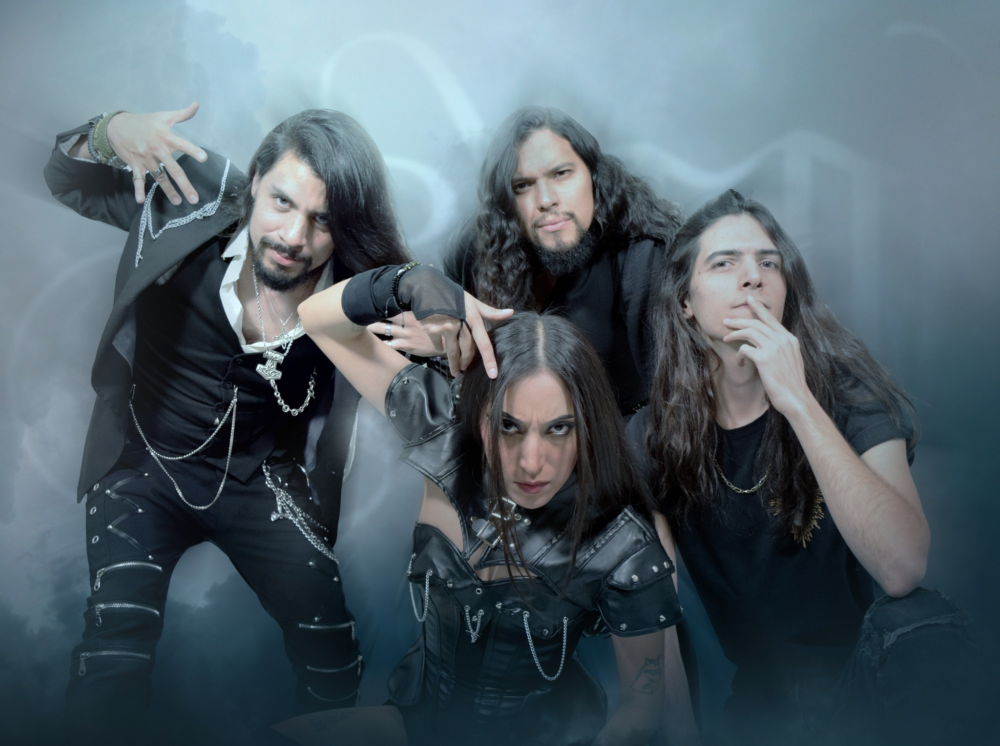

El metal sinfónico nacional se prepara para recibir una obra de proporciones épicas. Aryem ha desvelado los detalles de su tercer álbum de estudio, titulado "Agnes", una entrega conceptual que promete llevar su sonido a terrenos inexplorados y sumergirnos por completo en una mitología propia.
La narrativa detrás de este disco nos presenta a Agnes, un ser divino que llega a la Tierra por accidente. Lejos de la figura tradicional del héroe o de una entidad salvadora, ella es simplemente alguien que, poco a poco, aprende lo que significa sentir, soñar y, sobre todo, experimentar dolor. Su viaje es el de un ser que elige la vulnerabilidad terrenal, sabiendo perfectamente que esa decisión podría costarle todo lo que es.

Musicalmente, la banda se ha enfrentado a su reto más grande. A través de 14 tracks, el disco navegará entre atmósferas oscuras, agresividad metálica y pasajes orquestales hermosamente tristes. Para dar vida a este complejo universo visual y místico, el impecable artwork de la portada fue comisionado a Maaginen Studios.
FASES DE AGNES (TRACKLIST OFICIAL)
- 01. Agnes
- 02. Event Horizon
- 03. Do You Feel Worthless Yet?
- 04. In Love With You
- 05. Sellout
- 06. Holding On
- 07. Into Gravity
- 08. Son Del Alma
- 09. Battleground
- 10. All That's Left of Me (Nightflowers)
- 11. You Won't Miss Me
- 12. Nefilim
- 13. Not Enough For You
- 14. Lapsi Kuoleman Maailman